renv::init() # Initialize the project
renv::restore() # Download packages and their version saved in the lockfileTime Series Analysis
In Class Hands-On Exercise
BDSY 2025 - Public Health Modeling Project
BDSY 2025 - Public Health Modeling Project
Introduction
This workshop was developed by Dr. Dan Weinberger from the Yale School of Public Health (YSPH) for the 12^{th} International Symposium on Pneumococci and Pneumococcal Diseases (ISPPD-12) hosted in Toronto, Canada in June 2022. Here, we have adapted his workshop session #1, which compares different methods for fitting a time series dataset 1. Students are encouraged to explore the workshop content that Dr. Weinberger put together to learn more about the subject:
- GitHub: Find the code, original data, and slides 1.
- Workshop Webpage: Find a longer description of the workshop in the format of a mini course with links to video presentations of select sections - Workshop on the evaluation of vaccine impact 2.
The data used here is a subset of the complete set used in Oliveira, L. H. D. et al. 2020 3. In their paper, national-level mortality data spanning from 2000 to 2016 for children under 5 years of age was compiled and standardized by national mortality registers in 10 Latin American and Caribbean countries. The primary cause of death was classified using the International Classification of Diseases, Tenth Revision (ICD-10) codes (Influenza and pneumonia J09-J18 or Oliveira, L. H. D. et al. 2020 Supplementary Table 2) 4,5. The goal of the paper was to evaluate the efficacy of pneumococcal conjugate vaccines (PCVs) in children who received any part of the standard-of-care vaccination series.
Today, we are going to examine the efficacy of pneumococcal conjugate vaccines (PCVs) in children aged 2 to 59 months in Ecuador. The standard-of-care vaccination series involves a primary series of either two doses (administered at 2 and 4 months of age) or three doses (administered at 2, 4, and 6 months of age), with the option of an additional booster dose (administered at 12-18 months of age). This dataset does not differentiate between patients who received varying levels of inoculation, and instead reports the data if any PCV was delivered.
Preamble
This section is drawn from Dr. Weinberger’s recorded presentation What is ‘vaccine impact’?; and Administrative data: challenges and opportunities for evaluation studies 6.
Statistical inference can be reduced to quantitatively answering three types of questions:
- Causation: Was there a change, and can we identify what caused the change?
- Prediction: What do we expect to see in the future?
- Certainty: How reliable are the answers to the first two questions?
A biotechnologist developing a vaccine is primarily concerned with proving that there was a favorable change, such as mitigating the disease process in an individual. In contrast, a public health analyst aims to determine the overall impact of the vaccine on the population. For example, an effective vaccine not only protects an individual but also attenuates transmission within their immediate social circle.
This requires contextualizing the vaccine’s impact as a combination of direct and indirect effects. It is important to identify and control for unexplained linear and non-linear trends unrelated to the introduction of a vaccine to a population. For example, were there changes in overall population health at the same time or changes to diagnostic methods?
We can appreciate that this is a Sisyphean task, but one that can be addressed with time series analysis. Keep in mind that the methods discussed here are most applicable to endemic diseases that are consistently present in the population, existing at a relatively stable and predictable level. The core reason is that these methods require us to have an idea of what we would expect to have seen had the vaccine not been introduced, allowing us to posit a realistic counterfactual for model evaluation.
Our study is framed by PICO. In black text are the general definitions for the acronym and in red text is the application to our example:
- Population: The target population where the impact of a vaccine is to measured. Children 2-59 months old.
- Intervention: The date and timeframe for a vaccine intervention. Introduction of PCV10 to the Brazilian national immunization program.
- Comparator: Diseases or groups of diseases to compare against the intervention, which are not expected to be impacted by the intervention itself. Counterfactual to demonstrate what would have happened if the vaccine had not been introduced, compared to the factual scenario.
- Outcome: The condition representing our expected results from the intervention. Deaths due to pneumonia.
Set Up the Environment
suppressPackageStartupMessages({
library("readr") # For reading in the data
library("tibble") # For handling tidyverse tibble data classes
library("tidyr") # For tidying data
library("dplyr") # For data manipulation
library("stringr") # For string manipulation
library("MASS") # Functions/datasets for statistical analysis
library("lubridate") # For date manipulation
library("ggplot2") # For creating static visualizations
library("scales") # For formatting plots axis
library("gridExtra") # Creates multiple grid-based plots
})
# Function to select "Not In"
'%!in%' <- function(x,y)!('%in%'(x,y))The data has been cleaned and standardized for use here, and is imported directly using the GitHub raw URL. You can explore the additional data cleaning steps applied to all of the data in the instructor’s GitHub repository: ysph-dsde/bdsy-phm. The original dataset and prior data cleaning, validation, and standardization can be found in the paper’s GitHub repository and Dr. Weinberger’s workshop GitHub repository 1,3.
# Read in the cleaned data directly from the instructor's GitHub.
df <- read_csv("https://raw.githubusercontent.com/ysph-dsde/bdsy-phm/refs/heads/main/Data/ec_2to59m.csv")
# Summarize aspects and dimentions of our dataset.
glimpse(df)Rows: 144
Columns: 6
$ date <date> 2005-01-01, 2005-02-01, 2005-03-01, 2005-04-01, 2005-05-…
$ country <chr> "Ecuador", "Ecuador", "Ecuador", "Ecuador", "Ecuador", "E…
$ age_group <chr> "2-59m", "2-59m", "2-59m", "2-59m", "2-59m", "2-59m", "2-…
$ doses <chr> "Any", "Any", "Any", "Any", "Any", "Any", "Any", "Any", "…
$ J12_J18_prim <dbl> 50, 51, 53, 46, 62, 34, 38, 38, 28, 26, 33, 31, 46, 53, 5…
$ acm_noj_prim <dbl> 204, 171, 166, 197, 212, 180, 158, 167, 144, 149, 153, 14…Data Dictionary
It is crucial that we understand the meaning of each variable in our dataset. Sometimes, there are surprising aspects embedded within the variables that are not immediately discernible from the table itself. Many sources provide a “Data Dictionary” for this purpose, but at times, you may need to interpret the variable meanings based on context and methods.
This paper did not explicitly describe each variable in a “Data Dictionary”; therefore, the following was assembled based on the context and methods provided in the paper and its supplementary materials 3,4.
date: The month when the events were recorded. This spans from 2005-01-01 to 2016-12-01.
country: Specifies the country where the events were observed. This dataset only represents events recorded in Ecuador.
age_group: The age of the person who is represented in the counts. This dataset only represents infants aged 2 months to almost 5 years of age (59 months).
doses: Specifies the doses of PCV received. As described earlier, all possible combinations of the standard-of-care vaccination series and booster are represented here.
J12_J18_prim: Primary cause of death is assigned to the ICD-10 codes J12-J18. We encourage you to read more about what these ICD-10 codes represent 4,5.
acm_noj_prim: Primary cause of death was assigned any other ICD=10 code, excluding only the J chapter, diseases of the respiratory system.
Initial Plot of the Time Series
We begin each time series analysis by examining the entire span of data, typically plotted as a line or scatter plot. All methods for modeling the vaccination introduction time series data require the dates when the vaccine was introduced, in this case the PCV10 vaccine.
# Estimation when the vaccine was introduced in YYYY-MM-DD format.
vax.intro.date <- as.Date("2010-08-01")
# Date when vaccine efficacy evaluations started; at least 12 months
# following administration.
vax.eval.date <- as.Date("2011-08-01")We are not going to spend time explaining how to plot using the tidyverse package ggplot2() here. Later in the week you will receive a lecture covering this topic. In the meantime, you are welcome to explore the ggplot2 package documentation or the Data Science and Data Equity (DSDE) group’s online Book of Workshops 7,8.
p1 <-
ggplot(df, aes(x = date, y = J12_J18_prim)) +
geom_line() +
labs(title = "Deaths Categorized by\nICD-10 Codes J12-18",
x = "Date", y = "Counts for <5 yo") +
# Have y-axis for the two plots be the same.
ylim(0, 250) +
# Reference line.
geom_vline(xintercept = vax.intro.date, col = "red", lty = 2) +
theme_linedraw()
p2 <-
ggplot(df, aes(x = date, y = acm_noj_prim)) +
geom_line() +
labs(title = "Deaths Categorized by\nNon-J chapter ICD-10 Codes",
x = "Date", y = "Counts for <5 yo") +
# Have y-axis for the two plots be the same.
ylim(0, 250) +
# Reference line.
geom_vline(xintercept = vax.intro.date, col = "red", lty = 2) +
theme_linedraw()
# Display the plots side-by-side.
grid.arrange(p1, p2, nrow = 1)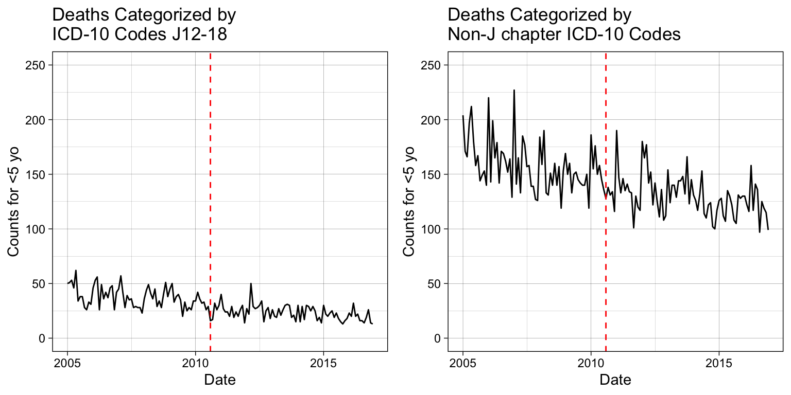
Simple Linear Model
To correctly fit a simple linear model to the data, we need to apply a linearization that appropriately reflects its distribution. There are more analytical approaches to achieve this that will not be covered here. We start by visually examining the distribution with a scatter plot.
Note
It is helpful to consider the data generation method, which can provide insights into the likely distribution.
p_base <-
ggplot(df, aes(x = date, y = J12_J18_prim)) +
geom_point() +
labs(title = "Deaths Scatter Plot",
x = "Date", y = "Counts for <5 yo") +
# Have y-axis for the two plots be the same.
ylim(0, NA) +
theme_linedraw()
p_base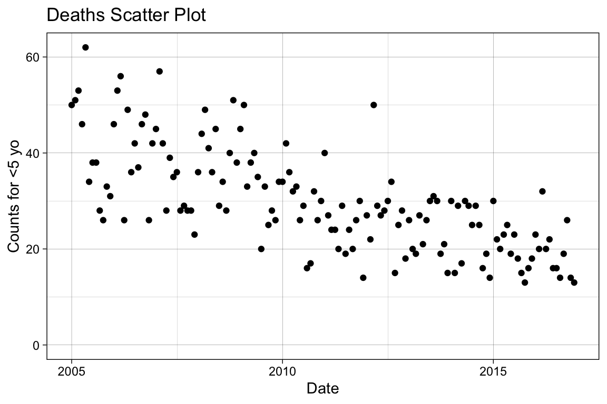
Variables that reflect counts (i.e., the number of deaths per month) can be distributed as either Poisson or negative binomial. Note that Poisson regression may artificially narrow confidence intervals when the data is overdispersed. To address this, you can use a negative binomial regression or a quasipoisson model, which accounts for the unexplained variation. In this context, we will apply a negative binomial regression.
# For modeling, we need to use an ordered, discrete variable. Simply, we
# can use the rownames for this purpose.
df <- tibble::rownames_to_column(df, var = "index") %>%
mutate(index = as.numeric(index))
# Apply the negative binomial regression.
mod1 <- glm.nb(J12_J18_prim ~ index , data = df)
# Examine the fitting results.
summary(mod1)
Call:
glm.nb(formula = J12_J18_prim ~ index, data = df, init.theta = 38.18819754,
link = log)
Coefficients:
Estimate Std. Error z value Pr(>|z|)
(Intercept) 3.8223994 0.0389150 98.22 <2e-16 ***
index -0.0062897 0.0004981 -12.63 <2e-16 ***
---
Signif. codes: 0 '***' 0.001 '**' 0.01 '*' 0.05 '.' 0.1 ' ' 1
(Dispersion parameter for Negative Binomial(38.1882) family taken to be 1)
Null deviance: 304.02 on 143 degrees of freedom
Residual deviance: 142.25 on 142 degrees of freedom
AIC: 976.12
Number of Fisher Scoring iterations: 1
Theta: 38.2
Std. Err.: 10.2
2 x log-likelihood: -970.12 # Make predictions with confidence intervals.
pred <- predict(mod1, type = "response", se.fit = TRUE)
# Add the model predictions and 95% COI to the dataframe.
df.pred <- df %>%
mutate(se.fit = pred$se.fit, pred = pred$fit) %>%
mutate(
conf.low = pred - 1.96 * se.fit,
conf.high = pred + 1.96 * se.fit
)
# Plot the newly created model fitting.
p_sm <- p_base +
# Add the fitting line.
geom_line(data = df.pred, aes(x = date, y = pred),
color = "#e41a1c") +
# Add the confidence interval.
geom_ribbon(data = df.pred, aes(ymin = conf.low, ymax = conf.high),
alpha = 0.2, fill = "blue") +
# Change the title name.
labs(title = "Deaths with a Negative Binomial Fit")
p_sm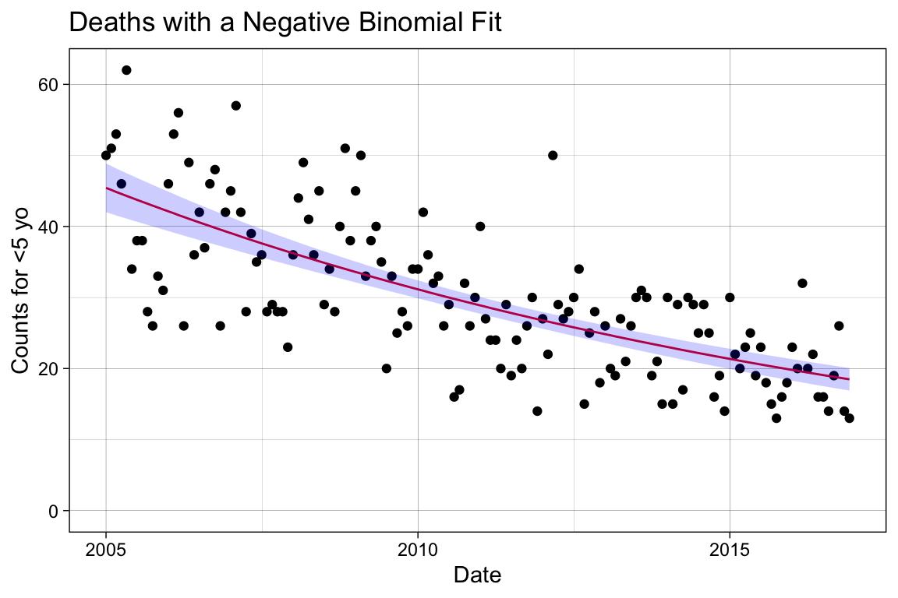
This is not a terrible predictor of our trend, but it overlooks many known sources of variance. For instance, we know that infections have seasonal trends, sometimes referred to by its technical term periodicity. Additionally, our baseline population may change from 2005 to 2016, which can consequently shift the overall disease trend in tandem with these baseline changes.
Building the Multiple Linear Model

Add Controls for Seasonality
Seasonality often manifests as periodicity, where recurring patterns repeat at regular, fixed intervals of time. This differs from the related concept of cyclicity, which represents recurring patterns that do not occur at regular intervals or consistently appear in regular seasons 9.
Each seasonal pattern can be decomposed into three components that can either remain constant (stationary) or change over time (non-stationary): mean, variance, and covariance. The figure on the left illustrates the four possible seasonal trends separately. The top-left panel shows a recurring pattern with time-invariant, stationary parameters, while the other panels demonstrate the effects of non-stationary parameters.
Note
Most time series data in the natural sciences exhibit seasonality, periodicity, or cyclicity, though these patterns may be difficult to detect when the data is noisy 10.
To control for temporal variations such as seasonality, we employ a simple form of dynamic linear regression (DLR). Essentially, we add variables to our simple linear regression model that represents different subsections of time as new regressors. Applying a DLR allows for changes in the mean value of the underlying regression relationship 11. For the regression function to recognize each date, we need to factorize the date variable to assign the month the observation occured.
df$month <- as.factor(month(df$date))
# Inspect the first 36 entries.
df$month[1:36] [1] 1 2 3 4 5 6 7 8 9 10 11 12 1 2 3 4 5 6 7 8 9 10 11 12 1
[26] 2 3 4 5 6 7 8 9 10 11 12
Levels: 1 2 3 4 5 6 7 8 9 10 11 12# Update the model.
mod2 <- glm.nb(J12_J18_prim ~ date + month, data = df)
summary(mod2)
Call:
glm.nb(formula = J12_J18_prim ~ date + month, data = df, init.theta = 88.28907799,
link = log)
Coefficients:
Estimate Std. Error z value Pr(>|z|)
(Intercept) 6.496e+00 2.156e-01 30.132 < 2e-16 ***
date -1.988e-04 1.426e-05 -13.941 < 2e-16 ***
month2 -2.717e-02 8.166e-02 -0.333 0.739391
month3 3.446e-02 8.086e-02 0.426 0.669971
month4 -1.892e-01 8.441e-02 -2.241 0.025011 *
month5 -4.964e-02 8.228e-02 -0.603 0.546315
month6 -1.571e-01 8.409e-02 -1.868 0.061714 .
month7 -2.118e-01 8.513e-02 -2.488 0.012840 *
month8 -2.076e-01 8.518e-02 -2.437 0.014804 *
month9 -3.266e-01 8.749e-02 -3.733 0.000189 ***
month10 -2.253e-01 8.574e-02 -2.627 0.008603 **
month11 -2.467e-01 8.626e-02 -2.859 0.004243 **
month12 -3.386e-01 8.813e-02 -3.842 0.000122 ***
---
Signif. codes: 0 '***' 0.001 '**' 0.01 '*' 0.05 '.' 0.1 ' ' 1
(Dispersion parameter for Negative Binomial(88.2891) family taken to be 1)
Null deviance: 404.40 on 143 degrees of freedom
Residual deviance: 143.84 on 131 degrees of freedom
AIC: 959.32
Number of Fisher Scoring iterations: 1
Theta: 88.3
Std. Err.: 41.2
2 x log-likelihood: -931.319 # Make predictions with confidence intervals.
pred2 <- predict(mod2, type = "response", se.fit = TRUE)
# Add the model predictions and 95% COI to the dataframe.
df.pred2 <- df %>%
mutate(se.fit = pred2$se.fit, pred = pred2$fit) %>%
mutate(
conf.low = pred - 1.96 * se.fit,
conf.high = pred + 1.96 * se.fit
)
# Plot the newly created model fitting.
p_season <- p_base +
# Add the fitting line.
geom_line(data = df.pred2, aes(x = date, y = pred),
color = "#e41a1c") +
# Add the confidence interval.
geom_ribbon(data = df.pred2, aes(ymin = conf.low, ymax = conf.high),
alpha = 0.2, fill = "blue") +
# Change the title name.
labs(title = "Deaths with a Negative Binomial Fit\nSeasonality Term Included")
p_season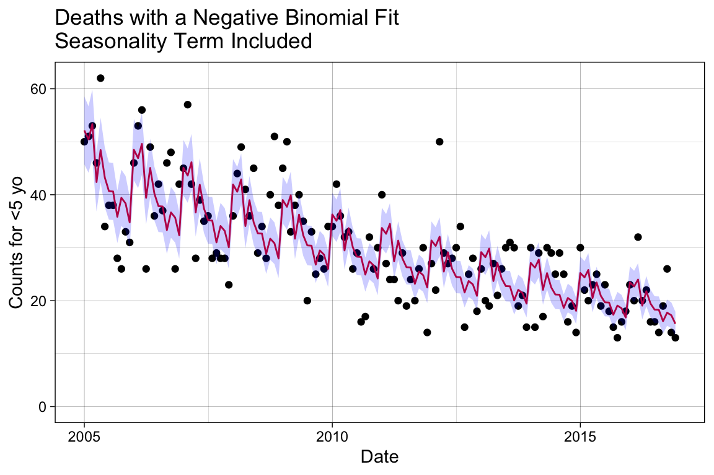
Add Controls for Baseline Shifts

We can expect that the baseline population changes over time, introducing unaccounted-for heterogeneous variance to our model. In epidemiology, it is standard to contextualize raw data by applying a denominator, or offset, that represents the population at risk of the disease.
The figure on the right illustrates how the baseline for the number of hospitalizations normalizes when we apply the population offset. Keep in mind that this ratio is often scaled to “per 100,000 persons.” 6.
\frac{n_{cases}}{n_{population}} \times 100,000
In real-world scenarios, the total base population is not always reported, or the coverage might be unreliable for the entire span of the time series. Alternatively, we can apply denominators such as the number of people using the healthcare system, the number of people hospitalized, and similar metrics 6. In this example, we could apply the total population size or all non-respiratory causes of mortality.
# Create the offset using all deaths not coded as J. Transform the values
# to log before use in the negative binomial fitting.
df$log.offset <- log(df$acm_noj_prim)
# Refit the model with an offset.
model3 <- glm.nb(J12_J18_prim ~ index + month + offset(log.offset), data = df)
summary(model3)
Call:
glm.nb(formula = J12_J18_prim ~ index + month + offset(log.offset),
data = df, init.theta = 59.08482937, link = log)
Coefficients:
Estimate Std. Error z value Pr(>|z|)
(Intercept) -1.3687586 0.0672076 -20.366 < 2e-16 ***
index -0.0034881 0.0004599 -7.584 3.36e-14 ***
month2 0.1651225 0.0873636 1.890 0.0587 .
month3 0.1509818 0.0867654 1.740 0.0818 .
month4 -0.0005318 0.0899497 -0.006 0.9953
month5 0.0704091 0.0880910 0.799 0.4241
month6 0.0227796 0.0896446 0.254 0.7994
month7 -0.0122476 0.0906691 -0.135 0.8925
month8 0.0077403 0.0907734 0.085 0.9320
month9 -0.0526956 0.0929670 -0.567 0.5708
month10 -0.0053806 0.0912550 -0.059 0.9530
month11 0.0443924 0.0916610 0.484 0.6282
month12 -0.0283404 0.0935272 -0.303 0.7619
---
Signif. codes: 0 '***' 0.001 '**' 0.01 '*' 0.05 '.' 0.1 ' ' 1
(Dispersion parameter for Negative Binomial(59.0848) family taken to be 1)
Null deviance: 219.59 on 143 degrees of freedom
Residual deviance: 145.49 on 131 degrees of freedom
AIC: 977.59
Number of Fisher Scoring iterations: 1
Theta: 59.1
Std. Err.: 21.1
2 x log-likelihood: -949.594 # Make predictions with confidence intervals.
pred3 <- predict(model3, type = "response", se.fit = TRUE)
# Add the model predictions and 95% COI to the dataframe.
df.pred3 <- df %>%
mutate(se.fit = pred3$se.fit, pred = pred3$fit) %>%
mutate(
conf.low = pred - 1.96 * se.fit,
conf.high = pred + 1.96 * se.fit
)
# Plot the newly created model fitting.
p_offset <- p_base +
# Add the fitting line.
geom_line(data = df.pred3, aes(x = date, y = pred),
color = "#e41a1c") +
# Add the confidence interval.
geom_ribbon(data = df.pred3, aes(ymin = conf.low, ymax = conf.high),
alpha = 0.2, fill = "blue") +
# Change the title name.
labs(title = "Deaths with a Negative Binomial Fit\nSeasonality Term and Offset")
p_offset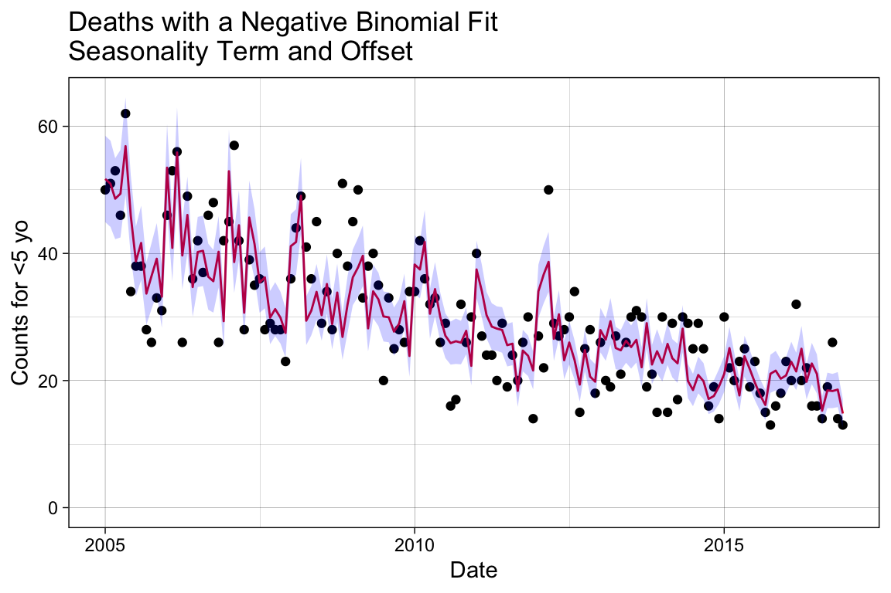
Notice that the seasonality trend, which was clear in the previous plot, is disrupted when the population offset is applied. Now that we have our baseline model, we are ready to proceed with examining the effect of the intervention with PCV10 after its introduction on 2010-08-01.
Does the Disease Trend or Level Change?
In this section, we will test whether the trend or level of pneumonia deaths due to pneumococcal disease changes after the introduction of the PCV10 vaccine. To accomplish this, we will set up a counterfactual model to represent what our base model predicts the death counts would have been if the vaccine had not been introduced to the population. Similarly, a factual model will be applied to represent what actually happened with the vaccine rollout.
We will then compare the factual model against the counterfactual model to determine if a difference is identified in the period following vaccine introduction. This process is generally referred to as detecting vaccine effect or vaccine impact.
Warning
You want to be careful when applying causal inference methods to model building, perturbation, or prediction questions. While our analysis uses a causal framework to detect the possible impact of the vaccine introduction, this does not permit us to make definitive claims of causation.
Additionally, it is important to remember that the model we have built may have other flaws influencing its sensitivity to the pre/post vaccination period. It is always best practice to test a model under different conditions and subject it to various tests to robustly justify its accuracy, precision, and generalizability.
The figure below illustrates the three phases of the vaccine rollout: pre-vaccination, post-vaccination, and a latency period between the start of vaccine distribution and efficacy evaluation. Recall that our base negative binomial model accounts for three effector variables: an ordered, discrete variable organizing the outcomes temporally without seasonality, the month to capture seasonal periodicity, and an offset to the baseline accounting for population changes. Our baseline model is expected to, and is therefore assumed to, detect the drop in average cases during the post-vaccination period.

This model, however, does not explicitly assign outcomes to the three phases represented in the figure. Therefore, we need to set up variables that distinguish outcomes before and after the vaccine introduction, as well as before and after the entry to the vaccine evaluation phase, in order to convert the base model into our factual and counterfactual models.
We also need to regenerate the model to produce factually-based and counterfactually-based predictions for comparison. There are three modeling approaches we will evaluate here, each employing a different method to define the pre/post and latency vaccination periods. These differences will impact our inference about vaccine effectiveness.
Interrupted Time Series with Disconnected Segments: This method fits different line segments through the data and tests whether the slope or level of the disease changes. It can sometimes result in abrupt jumps when fitting the model.
Interrupted Time Series with Connected Segments (Spline Model): This method allows the slope to change in the post-vaccine period but ensures the change is smooth.
Extrapolation Based on the Pre-Vaccine Period: This method fits the model to data from the pre-vaccine period only and extrapolates the trend to the post-vaccine period.
Method 1. Interrupted Time Series with Disconnected Segments
We will add two new binary variables to our dataset: vax_intro and vax_eval. The vax_intro variable will be assigned a value of 0 before 2010-08-01 and 1 afterward; similarly, the vax_eval variable will be assigned a value of 0 before 2011-08-01 and 1 afterward.
# Assign outcomes to the known vaccine phases.
df <- df %>%
mutate(
vax_intro = ifelse(date >= vax.intro.date, 1, 0),
vax_eval = ifelse(date >= vax.eval.date, 1, 0)
)
# View the changes by randomly selecting dates.
df[sort(sample(1:144, 10)), c("index", "date", "vax_intro", "vax_eval")]# A tibble: 10 × 4
index date vax_intro vax_eval
<dbl> <date> <dbl> <dbl>
1 11 2005-11-01 0 0
2 12 2005-12-01 0 0
3 25 2007-01-01 0 0
4 42 2008-06-01 0 0
5 47 2008-11-01 0 0
6 53 2009-05-01 0 0
7 55 2009-07-01 0 0
8 76 2011-04-01 1 0
9 80 2011-08-01 1 1
10 119 2014-11-01 1 1In linear modeling, it is common to include interaction terms. These terms allow the model to capture interdependencies between variables, showing how the effect of one variable on the outcome changes depending on the level of another variable. Interaction terms also enable the identification of synergistic effects, where the combined effect of two variables is greater (or less) than the sum of their individual effects 13.
Equation 1 shows a multiple linear regression without an interaction term, and Equation 2 shows the inclusion of the interaction term. Notice that including the interaction term impacts the slope, making it dependent on the value of the other predictor. For example, the impact of X_1, holding X_2 constant, on the slope of Y is a function of (\beta_1 + \beta_3)\ X_2 13.
\begin{align} Y &= \beta_0 + \beta_1 X_1 + \beta_2 X_2 + \epsilon\\ Y &= \beta_0 + \beta_1 X_1 + \beta_2 X_2 + \beta_3 (X_1 \times X_2) + \epsilon \end{align}
We will not spend more time discussing interaction terms but will briefly examine if they enhance the model’s predictive power. Note that while interaction terms can improve predictive accuracy, they also complicate the model and may result in a trade-off between predictive power and generalizability to other datasets.
First we will generate the two models, then we will evaluate their performance side-by-side.
No Interaction Terms
Create a simple step-change model without an interaction term involving the newly added variables, vax_intro and vax_eval.
# Additional seasonality controls covered in the collapsed box above.
mod_method1a <- glm.nb(J12_J18_prim ~ index + month + offset(log.offset) +
# Change in disease during administration and
# evaluation period.
vax_intro + vax_eval, data = df)
summary(mod_method1a)
Call:
glm.nb(formula = J12_J18_prim ~ index + month + offset(log.offset) +
vax_intro + vax_eval, data = df, init.theta = 64.37470892,
link = log)
Coefficients:
Estimate Std. Error z value Pr(>|z|)
(Intercept) -1.382710 0.069290 -19.956 <2e-16 ***
index -0.002510 0.001014 -2.476 0.0133 *
month2 0.163233 0.086008 1.898 0.0577 .
month3 0.147780 0.085409 1.730 0.0836 .
month4 -0.004393 0.088661 -0.050 0.9605
month5 0.065323 0.086796 0.753 0.4517
month6 0.017042 0.088446 0.193 0.8472
month7 -0.018766 0.089510 -0.210 0.8339
month8 0.006893 0.089471 0.077 0.9386
month9 -0.054212 0.091693 -0.591 0.5544
month10 -0.006595 0.089942 -0.073 0.9416
month11 0.041625 0.090381 0.461 0.6451
month12 -0.031725 0.092285 -0.344 0.7310
vax_intro -0.167101 0.083391 -2.004 0.0451 *
vax_eval 0.076690 0.083253 0.921 0.3570
---
Signif. codes: 0 '***' 0.001 '**' 0.01 '*' 0.05 '.' 0.1 ' ' 1
(Dispersion parameter for Negative Binomial(64.3747) family taken to be 1)
Null deviance: 225.73 on 143 degrees of freedom
Residual deviance: 145.44 on 129 degrees of freedom
AIC: 977.59
Number of Fisher Scoring iterations: 1
Theta: 64.4
Std. Err.: 24.3
2 x log-likelihood: -945.595 ## --------------------
## Generate the factual model
# Make predictions with confidence intervals.
pred4 <- predict(mod_method1a, type = "response", se.fit = TRUE)
## --------------------
## Prepare a plot to visualize the factual model predictions
# Add the model predictions and 95% COI to the dataframe.
df.pred.its <- df %>%
mutate(se.fit = pred4$se.fit, pred = pred4$fit) %>%
mutate(
conf.low = pred - 1.96 * se.fit,
conf.high = pred + 1.96 * se.fit
)
# Plot the newly created model fitting.
p_m1a <- p_base +
# Add the fitting line.
geom_line(data = df.pred.its, aes(x = date, y = pred),
color = "#377eb8") +
# Add the confidence interval.
geom_ribbon(data = df.pred.its, aes(ymin = conf.low, ymax = conf.high),
alpha = 0.2, fill = "blue") +
# Change the title name.
labs(title = "Deaths with a Negative Binomial Fit\nInterupted Time Series - No Interaction Terms")
## --------------------
## Generate the counterfactual model
# Initialize the vacccine effect variables by setting them to 0.
df.counterfactual.a <- df
df.counterfactual.a$vax_intro <- 0
df.counterfactual.a$vax_eval <- 0
# Generate the fitted values using the counterfactual setup instead.
df.pred.its$pred4.cf.a <- predict(mod_method1a, type = "response",
newdata = df.counterfactual.a)
## --------------------
## Rate ratio to evaluate performance
# Generate the rate ratio between the factual and counterfactual values.
df.pred.its$rr.its.a <- df.pred.its$pred/df.pred.its$pred4.cf.aWith Interaction Terms
Create the more complicated model option by adding an interaction term involving vax_intro and vax_eval, keeping both individually and including with an interaction with index.
mod_method1b <- glm.nb(J12_J18_prim~index + month + offset(log.offset) +
# Add the counterfactuals with an interaction term.
vax_intro + vax_intro*index +
vax_eval + vax_eval*index, data = df)
summary(mod_method1b)
Call:
glm.nb(formula = J12_J18_prim ~ index + month + offset(log.offset) +
vax_intro + vax_intro * index + vax_eval + vax_eval * index,
data = df, init.theta = 65.62229438, link = log)
Coefficients:
Estimate Std. Error z value Pr(>|z|)
(Intercept) -1.410897 0.074005 -19.065 <2e-16 ***
index -0.001660 0.001288 -1.288 0.1976
month2 0.163960 0.085713 1.913 0.0558 .
month3 0.148234 0.085153 1.741 0.0817 .
month4 -0.003138 0.088498 -0.035 0.9717
month5 0.067516 0.086678 0.779 0.4360
month6 0.019034 0.088478 0.215 0.8297
month7 -0.016266 0.089654 -0.181 0.8560
month8 0.003650 0.089526 0.041 0.9675
month9 -0.055524 0.091668 -0.606 0.5447
month10 -0.008492 0.089787 -0.095 0.9247
month11 0.039981 0.090176 0.443 0.6575
month12 -0.032091 0.092017 -0.349 0.7273
vax_intro 0.267869 1.533398 0.175 0.8613
vax_eval -0.184445 1.541114 -0.120 0.9047
index:vax_intro -0.006384 0.020854 -0.306 0.7595
index:vax_eval 0.004214 0.020870 0.202 0.8400
---
Signif. codes: 0 '***' 0.001 '**' 0.01 '*' 0.05 '.' 0.1 ' ' 1
(Dispersion parameter for Negative Binomial(65.6223) family taken to be 1)
Null deviance: 227.08 on 143 degrees of freedom
Residual deviance: 145.13 on 127 degrees of freedom
AIC: 980.44
Number of Fisher Scoring iterations: 1
Theta: 65.6
Std. Err.: 25.0
2 x log-likelihood: -944.439 ## --------------------
## Generate the factual model
# Make predictions with confidence intervals.
pred5 <- predict(mod_method1b, type = "response", se.fit = TRUE)
## --------------------
## Prepare a plot to visualize the factual model predictions
# Add the model predictions and 95% COI to the dataframe.
df.pred.its <- df.pred.its %>%
mutate(se.fit = pred5$se.fit, pred = pred4$fit) %>%
mutate(
conf.low = pred - 1.96 * se.fit,
conf.high = pred + 1.96 * se.fit
)
# Plot the newly created model fitting.
p_m1b <- p_base +
# Add the fitting line.
geom_line(data = df.pred.its, aes(x = date, y = pred),
color = "#377eb8") +
# Add the confidence interval.
geom_ribbon(data = df.pred.its, aes(ymin = conf.low, ymax = conf.high),
alpha = 0.2, fill = "blue") +
# Change the title name.
labs(title = "Deaths with a Negative Binomial Fit\nInterupted Time Series - With Interaction Terms")
## --------------------
## Generate the counterfactual model
# Initialize the vacccine effect variables by setting them to 0.
df.counterfactual.b <- df
df.counterfactual.b$vax_intro <- 0
df.counterfactual.b$vax_eval <- 0
# Generate the fitted values using the counterfactual setup instead.
df.pred.its$pred4.cf.b <- predict(mod_method1b, type = "response",
newdata = df.counterfactual.b)
## --------------------
## Rate ratio to evaluate performance
# Generate the rate ratio between the factual and counterfactual values.
df.pred.its$rr.its.b <- df.pred.its$pred/df.pred.its$pred4.cf.bCompare Model Complexity
Let’s start by comparing how the fit differs between the models.
# Overlay onto plot.
p_m1a_pred <- p_m1a +
geom_line(data = df.pred.its, aes(x = date, y = pred4.cf.a),
color = '#e41a1c', lty = 2)
# Overlay onto plot.
p_m1b_pred <- p_m1b +
geom_line(data = df.pred.its, aes(x = date, y = pred4.cf.b),
color = '#e41a1c', lty = 2)
grid.arrange(p_m1a_pred, p_m1b_pred, ncol = 1)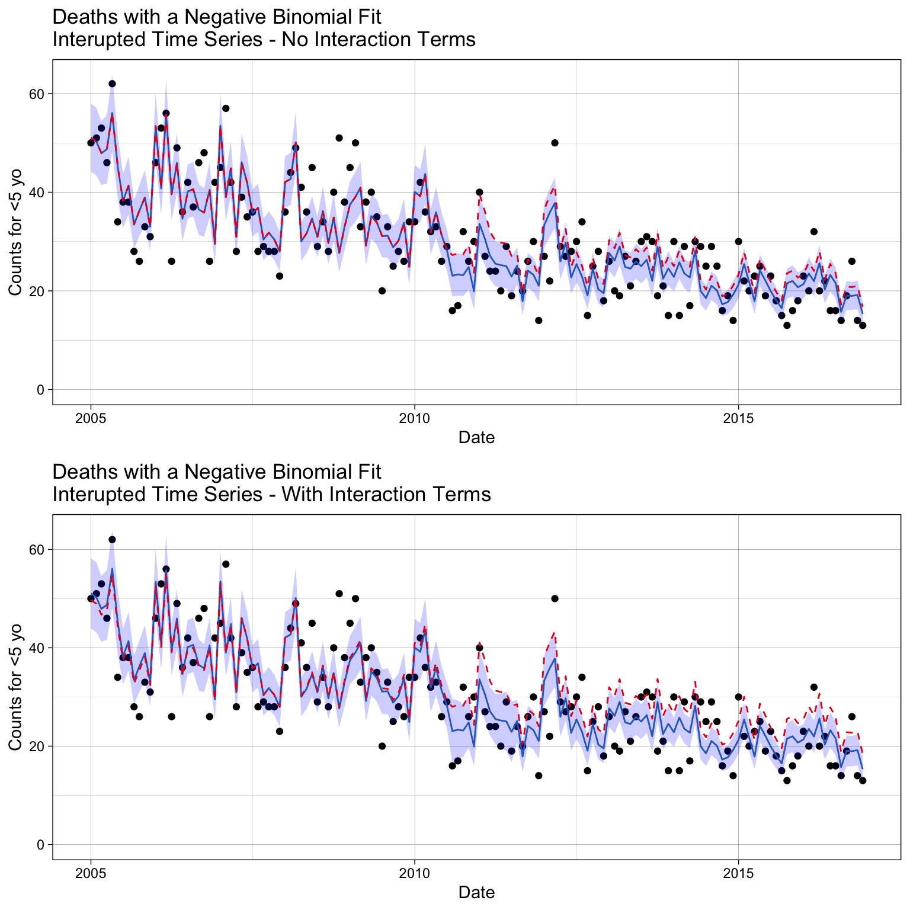
We do see differences with the prediction adherance to the data we trained the model on. By qualitative examination, it appears the model with interaction terms diverge more in the post-vaccination period.
The Akaike Information Criterion (AIC) is a one measure used to compare the goodness of fit of different statistical models, while also accounting for model complexity. It helps in model selection by balancing model fit and complexity, otherwise called the bias/variance trade-off.
There are different variations of AIC, but the basic definition is
\text{AIC} = 2k - 2\ln(\mathcal{L})
where k is the number of parameters in the model and \mathcal{L} is the maximum likelihood of the model.
AIC(mod_method1a, mod_method1b) df AIC
mod_method1a 16 977.5948
mod_method1b 18 980.4387The results indicate that the AIC score is worse (higher) when interaction terms are included. Since there is no significant gain in performance, we will prefer the simpler model for better generalizability.
Below, we also observe that the interaction terms create unexpected trends in the factual/counterfactual ratio. Notably, the ratio is not 1 (indicating that factual and counterfactual predictions are the same) in the pre-vaccination period, which is not ideal.
# Inspect methods sensitivity to vaccine impact.
p_ratio <-
ggplot(df.pred.its, aes(x = date, y = rr.its.a)) +
geom_line() +
labs(title = "Rate Ratio of the ITS Model",
x = "Date", y = "Rate ratio") +
ylim(0, NA) +
geom_vline(xintercept = vax.intro.date, col = "red", lty = 2) +
annotate("text", x = vax.intro.date + 30, y = 00.1, label = "Vaccine Introduced", color = "red", hjust = 0) +
theme_linedraw()
p_ratio +
geom_line(data = df.pred.its, aes(x = date, y = rr.its.b),
color = "#4daf4a")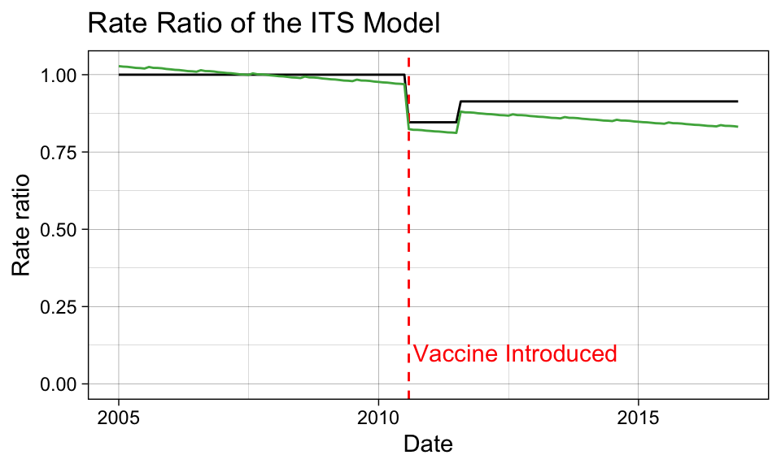
Code Like a Pro
We won’t try to estimate a confidence interval on the rate ratio here. Students are encouraged to checkout the the InterventionEvaluatR package, which will automatically calculate the confidence intervals for these ratios.
Method 2. Interrupted Time Series with Connected Segments (Spline Model)
In this case, we force the changes to be smooth so that we don’t get a drastic jump after vaccination introduction that prematurly shows impact during the expected latency period. Therefore, we will add two new variables to our dataset: spl1 and spl2. The spl1 variable will be assigned a value of 0 before 2010-08-01 and index - intro.index + 1 afterward; similarly, the spl2 variable will be assigned a value of 0 before 2011-08-01 and index - eval.index + 1 afterward.
# Identifies the row index that represents when the vaccine was introduced
# and when the evaluation period started.
intro.index <- which(df$date == vax.intro.date)
eval.index <- which(df$date == vax.eval.date)
# Assign outcomes to the known vaccine phases.
df <- df %>%
mutate(
spl1 = ifelse(index - intro.index + 1 < 0, 0, index - intro.index + 1),
spl2 = ifelse(index - eval.index + 1 < 0, 0, index - eval.index + 1)
)
# Inspect the changes.
df[sort(sample(1:144, 10)), c("date", "index", "spl1", "spl2")]# A tibble: 10 × 4
date index spl1 spl2
<date> <dbl> <dbl> <dbl>
1 2005-05-01 5 0 0
2 2006-01-01 13 0 0
3 2006-05-01 17 0 0
4 2007-04-01 28 0 0
5 2010-11-01 71 4 0
6 2011-01-01 73 6 0
7 2011-12-01 84 17 5
8 2013-07-01 103 36 24
9 2015-05-01 125 58 46
10 2016-11-01 143 76 64mod_method2 <- glm.nb(J12_J18_prim ~ index + month + offset(log.offset) +
# Post-vaccine changes.
spl1 + spl2, data = df)
summary(mod_method2)
Call:
glm.nb(formula = J12_J18_prim ~ index + month + offset(log.offset) +
spl1 + spl2, data = df, init.theta = 61.04668124, link = log)
Coefficients:
Estimate Std. Error z value Pr(>|z|)
(Intercept) -1.397121 0.074586 -18.732 <2e-16 ***
index -0.002349 0.001237 -1.899 0.0576 .
month2 0.164546 0.086841 1.895 0.0581 .
month3 0.151023 0.086225 1.752 0.0799 .
month4 -0.001397 0.089442 -0.016 0.9875
month5 0.069656 0.087565 0.795 0.4263
month6 0.020998 0.089150 0.236 0.8138
month7 -0.013534 0.090170 -0.150 0.8807
month8 0.006429 0.090270 0.071 0.9432
month9 -0.055311 0.092521 -0.598 0.5500
month10 -0.008406 0.090793 -0.093 0.9262
month11 0.040934 0.091221 0.449 0.6536
month12 -0.032326 0.093106 -0.347 0.7284
spl1 -0.007961 0.007038 -1.131 0.2580
spl2 0.007591 0.007271 1.044 0.2965
---
Signif. codes: 0 '***' 0.001 '**' 0.01 '*' 0.05 '.' 0.1 ' ' 1
(Dispersion parameter for Negative Binomial(61.0467) family taken to be 1)
Null deviance: 221.95 on 143 degrees of freedom
Residual deviance: 145.72 on 129 degrees of freedom
AIC: 980.3
Number of Fisher Scoring iterations: 1
Theta: 61.0
Std. Err.: 22.3
2 x log-likelihood: -948.296 ## --------------------
## Generate the factual model
# Make predictions with confidence intervals.
df.pred.spl <- df %>%
mutate(pred.spl = predict(mod_method2, type = "response"))
## --------------------
## Generate the counterfactual model
# Initialize the vacccine effect variables by setting them to 0.
df.counterfactual.spl <- df
df.counterfactual.spl$spl1 <- 0
df.counterfactual.spl$spl2 <- 0
# Generate the fitted values.
df.pred.spl$pred.spl.cf <- predict(mod_method2, type = "response",
newdata = df.counterfactual.spl)
## --------------------
## Rate ratio to evaluate performance
# Generate the rate ratio between the fitted and counterfactual values.
df.pred.spl$rr.spline <- df.pred.spl$pred.spl/df.pred.spl$pred.spl.cf## --------------------
## Prepare a plot to visualize the factual model predictions
# Make predictions with confidence intervals.
pred6 <- predict(mod_method2, type = "response", se.fit = TRUE)
# Add the model predictions and 95% COI to the dataframe.
df.pred.spl <- df.pred.spl %>%
mutate(se.fit = pred6$se.fit, pred = pred6$fit) %>%
mutate(
conf.low = pred - 1.96 * se.fit,
conf.high = pred + 1.96 * se.fit
)
p_m2 <-
ggplot(df.pred.spl, aes(x = date, y = J12_J18_prim)) +
geom_point() +
# Add the fitted line.
geom_line(data = df.pred.spl, aes(x = date, y = pred.spl),
color = "#377eb8") +
# Add the confidence interval.
geom_ribbon(data = df.pred.spl, aes(ymin = conf.low, ymax = conf.high),
alpha = 0.2, fill = "blue") +
# Add the counterfactual line.
geom_line(data = df.pred.spl, aes(x = date, y = pred.spl.cf),
color = "#e41a1c", lty = 2) +
labs(title = "Deaths with a Negative Binomial Fit\nITS with Spline Smoothing",
x = "Date", y = "Counts for <5 yo") +
theme_linedraw()
p_m2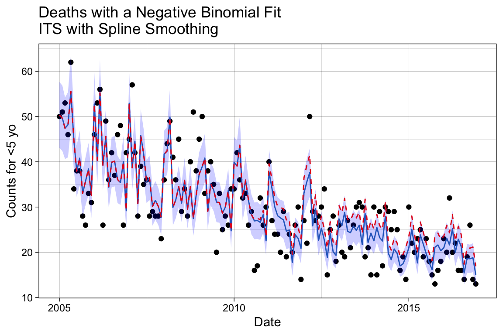
We can see here that the decline follows a smoother trajectory, by design. We can check the counterfactual performace by examining the ratio again.
# Inspect methods sensitivity to vaccine impact.
p_ratio <- p_ratio +
geom_line(data = df.pred.spl, aes(x = date, y = rr.spline),
color = "#4daf4a") +
# Update the title.
labs(title = "Rate Ratio with the Spline Model")
p_ratio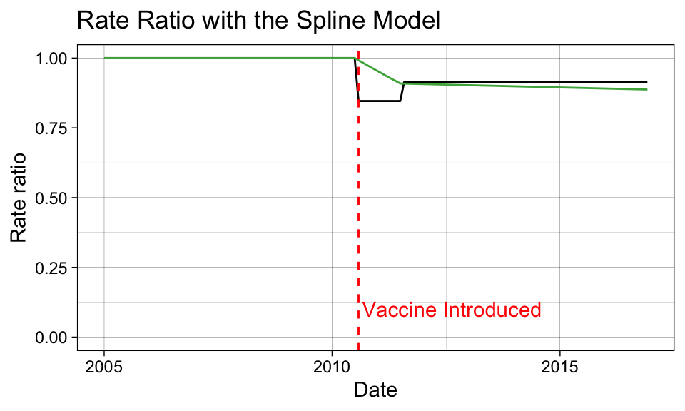
Method #3: Extrapolation Based on the Pre-Vaccine Period
Now we are going to model only the pre-vaccination period and forecast outcomes based on the restricted fitting into the post-vaccination period. We will create a new variable that excludes any records following 2010-08-01, J12_J18_prim.
# Create a new variable where it is J12_J18_prim until the vaccine is introduced,
# then it is NA afterwards.
df$J12_J18_prim_pre <- df$J12_J18_prim
df$J12_J18_prim_pre[which(df$date >= vax.intro.date)] <- NA
# Inspect the changes.
df[sort(sample(1:144, 10)), c("date", "J12_J18_prim_pre")]# A tibble: 10 × 2
date J12_J18_prim_pre
<date> <dbl>
1 2005-05-01 62
2 2006-11-01 26
3 2007-08-01 28
4 2007-11-01 28
5 2008-06-01 45
6 2008-07-01 29
7 2009-07-01 20
8 2010-06-01 26
9 2013-02-01 NA
10 2014-10-01 NAmod_method3 <- glm.nb(J12_J18_prim_pre ~ index + month + offset(log.offset), data = df)
# Add the prediction using the smoothed model.
df.pred.pre <- df %>%
mutate(pred.pre = predict(mod_method3, type = "response", newdata = df))Unlike before, the original observed variable J12_J18_prim now represents the factual model, as we regressed on a subset of data assuming nothing was known following the vaccine introduction. The prediction results using the restricted regressand represents the counterfactual model, since it extrapolates data points missing from the model fitting.
## --------------------
## Rate ratio to evaluate performance
# Generate the rate ratio between the factual and counterfactual values.
df.pred.pre$rr.trend <- df$J12_J18_prim/df.pred.pre$pred.pre## --------------------
## Prepare a plot to visualize the factual model predictions
# Make predictions with confidence intervals.
pred7 <- predict(mod_method3, type = "response", se.fit = TRUE, newdata = df)
# Add the model predictions and 95% COI to the dataframe.
df.pred.pre <- df.pred.pre %>%
mutate(se.fit = pred7$se.fit, pred = pred7$fit) %>%
mutate(
conf.low = pred - 1.96 * se.fit,
conf.high = pred + 1.96 * se.fit
)
p_m3 <-
ggplot(df.pred.pre, aes(x = date, y = J12_J18_prim)) +
geom_point() +
# Add the fitted line.
geom_line(data = df.pred.pre, aes(x = date, y = pred.pre),
color = "#377eb8") +
# Add the confidence interval.
geom_ribbon(data = df.pred.pre, aes(ymin = conf.low, ymax = conf.high),
alpha = 0.2, fill = "blue") +
labs(title = "Deaths with a Negative Binomial Fit\nExtrapolating Based on the Pre-Vaccine Period",
x = "Date", y = "Counts for <5 yo") +
theme_linedraw()
p_m3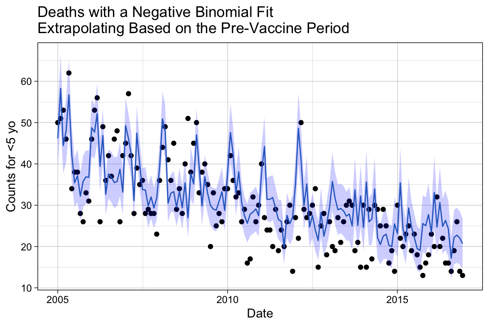
# Inspect methods sensitivity to vaccine impact.
p_ratio <- p_ratio +
geom_line(data = df.pred.pre, aes(x = date, y = rr.trend),
color = '#377eb8') +
# Update the title.
labs(title = "Rate Ratio with the Extrapolation Model")
p_ratio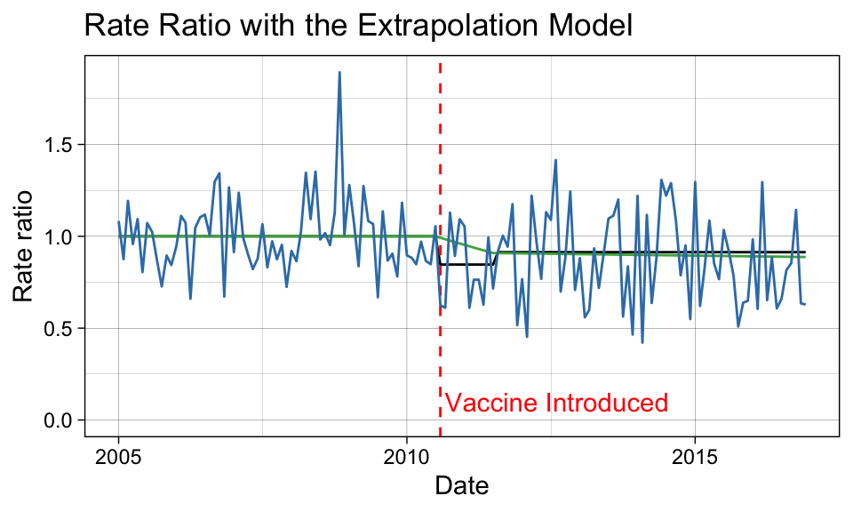
Compare the Methods
Let’s compare the rate ratio estimates from the three models. As a rough estimate, we will average the point-by-point estimates of the rate ratio during the evaluation period.
# Create a Boolean variable that defines the vaccine evaluation period.
eval.period <- df$date > vax.eval.date
# Calculate the average outcome during the vaccine evaluation period.
rr.its.eval <- mean(df.pred.its$rr.its.a[eval.period])
rr.spline.eval <- mean(df.pred.spl$rr.spline[eval.period])
rr.trend.eval <- sum(df.pred.pre$J12_J18_prim[eval.period])/sum(df.pred.pre$pred.pre[eval.period])
# Average decline detected from 1.
round(c("ITS - Disconnected" = rr.its.eval, "ITS - Spline" = rr.spline.eval,
"Extrapolation" = rr.trend.eval), digits = 2)ITS - Disconnected ITS - Spline Extrapolation
0.91 0.90 0.86 # Percent decline detected.
100*(1 - round(c("ITS - Disconnected" = rr.its.eval, "ITS - Spline" = rr.spline.eval,
"Extrapolation" = rr.trend.eval), digits = 2))ITS - Disconnected ITS - Spline Extrapolation
9 10 14 Two of the modeling methods identified a decrease of approximately 10% in pneumonia deaths due to pneumococcal disease after the release of the PCV10 vaccine. The extrapolation method indicates a stronger vaccine effect; however, we expect some of this result to be spurious due to the level of random noise introduced by applying the observed values in the counterfactual ratio calculation.
Caution
Depending on the dataset, these three methods may or may not agree to a greater extent.
References
2.
Weinberger, D. M. et al. Data analysis workshop at ISPPD | workshop on the evaluation of vaccine impact webpage. (2022).
3.
Oliveira, L. H. D. et al. Declines in pneumonia mortality following the introduction of pneumococcal conjugate vaccines in latin american and caribbean countries. Clinical Infectious Diseases 73, 306–313 (2021).
4.
Oliveira, L. H. D. et al. Declines in pneumonia mortality following the introduction of pneumococcal conjugate vaccines in latin american and caribbean countries - supplementary table 2. Clinical Infectious Diseases 73, 306–313 (2021).
5.
icd10data.com. 2025 ICD-10-CM codes J09-J18: Influenza and pneumonia.
6.
Weinberger, D. M. et al. 1. Vaccine impact; administrative data sources and their pitfalls - YouTube. YouTube (2021).
7.
Wickham, H. et al. Create Elegant Data Visualisations Using the Grammar of Graphics • Ggplot2. (Springer-Verlag, 2016).
8.
Golden, S. Data Visualization with Ggplot2 – Book of Workshops. (2025).
9.
Ninja, N. N. Periodicity: Detecting rhythms in data - let’s data science. (2023).
10.
Ramanathan, K. et al. Assessing seasonality variation with harmonic regression: Accommodations for sharp peaks. International Journal of Environmental Research and Public Health 17, (2020).
11.
Young, P. C. Recursive Estimation and Time-Series Analysis. Recursive Estimation and Time-Series Analysis (Springer Berlin Heidelberg, 2011). doi:10.1007/978-3-642-21981-8.
12.
Weinberger, D. M. et al. 2. Interrupted time series analysis. YouTube (2021).
13.
C, D. M., A, E. P. & Vining, G. G. Introducing to Linear Regression Analysis (6th Ed.). John Wiley and Sons 642 (Wiley Series, 2012).